Common Graphs¶
This page contains a bunch of graphs that we use in other chapters.
Lines¶
In this section,  and
and  can be any constants, and is
the slope. In general, the
equation of any non-vertical line is where and can be
0, positive or negative.
can be any constants, and is
the slope. In general, the
equation of any non-vertical line is where and can be
0, positive or negative.


Parabolas¶
Here ,  and
and  are constants. You'll see later why I skipped
are constants. You'll see later why I skipped  and
and  .
.
 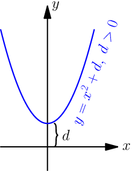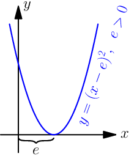
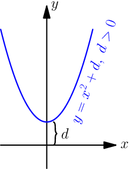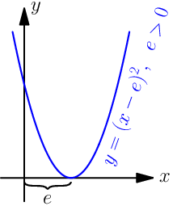


Handy thing: 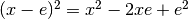
Proof:
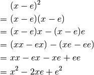
The equations of all these parabolas seem to be of the form 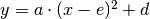. Let's expand that a bit:
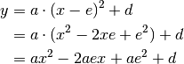
Now if we set and  , then and are also
constants because they don't depend on the value of
, then and are also
constants because they don't depend on the value of  . So we get this:
. So we get this:
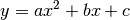
Equations of all parabolas that open up or down are like this. Note that 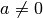 because 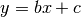 is a straight line.
Sine and Cosine¶
See this thing if you don't
know what  and radians are, and this
thing for a more
detailed introduction to
and radians are, and this
thing for a more
detailed introduction to  ,
,  and the unit circle. Note that
the graphs have a
and the unit circle. Note that
the graphs have a  axis instead of an axis, and that is the
same as the in the unit circle as radians.
axis instead of an axis, and that is the
same as the in the unit circle as radians.

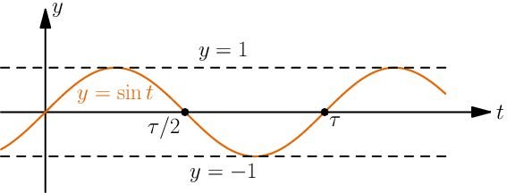
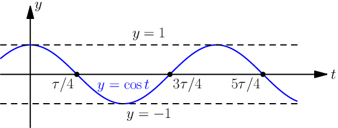